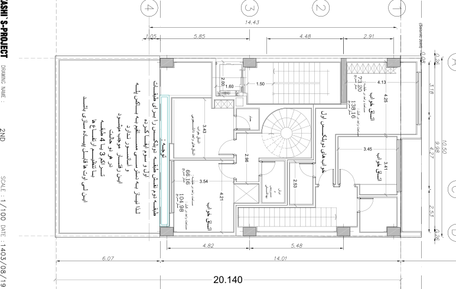

نقشه · طرح ۱۴۰۳
پلان طبقهٔ دوم
طبقهٔ دوم
بازترسیم شماتیک از روی شیت، تقریبی؛ ترازها فرضیاند.
بازترسیم شماتیک از روی شیت، تقریبی؛ ترازها فرضیاند.

{kind=link}
برداشت
طبقهای که هیچکس از راهپلهٔ مشترک به آن نمیآید. نیمهٔ رو به کوچه خوابهای دوبلکس پایین است که با پلهٔ خودشان بالا آمدهاند؛ نیمهٔ رو به حیاط اتاقهای خواب واحد دانشجویی است که پلهٔ مارپیچی در میانهاش به نشیمن بالا میپیچد. ایدهٔ برگه: طبقهای که لولای دو واحد است، و به همین دلیل با سه طبقه یا چهار طبقه تراکم فرقی نمیکند.
با شاخصها میخواند
- شاخص ۵: دو خواب دوبلکس الف رو به کوچه و اتاقهای واحد دانشجویی رو به حیاط؛ طبقهای که با بقیه فرق دارد.
- شاخص ۱۸: پلهٔ مارپیچ واحد دانشجویی و پلهٔ داخلی دوبلکس: پلههای تودرتو، هرچند بیپنجره.
- شاخص ۴: هر واحد حمام خودش را دارد و دوبلکس الف دوش و سرویس جداگانه.
چه چیزی را کم دارد
- صاحب زمین پلهٔ مارپیچ را نمیخواست؛ پلهٔ مربع در کنج را ترجیح میداد.
- اتاقهای نهمتری واحد دانشجویی به نظر صاحب زمین کوچک بود؛ او فضای باز بیدیوار میخواست.
- اتاق کاری در این طبقه نیست؛ خواب سوم باید این نقش را بگیرد.
چه چیزی اضافه میکند
- پلهٔ مارپیچ: پلهای که کم جا میگیرد و واحد کوچک را دوطبقه میکند.
- طبقهای بینیاز از پله و آسانسور مشترک؛ همین نقشه در تراکم سه و چهار طبقه کار میکند.
- خوابها یک طبقه دورتر از نشیمن: شب و روز دوبلکس از هم جدا میشوند.
چه پرسشی باز میماند
- ترکیب واحدها: واحد دانشجویی برای کیست و چند واحد از این دست زیاد است؟
- خانهای که بتواند اتاق دیگران شود: این طبقه میتواند به واحد کناری بپیوندد یا جدا بماند؛ با کدام دیوارها؟
چطور میشد بهتر باشد
- میشد پلهٔ واحد دانشجویی مربع و در کنج جنوبغربی باشد، و دیوار میان اتاقها برداشته شود تا فضای باز بزرگتری با کمد بیشتر بماند.
- میشد سهم واحد دانشجویی از جبههٔ نورگیر کمتر از نصف باشد تا واحد بزرگتر جای بیشتری بگیرد.
جزئیات روی شیت
- پلهٔ مارپیچ در میانهٔ پلان: پلهٔ واحد دانشجویی که طبقهٔ دوم را به سوم میدوزد.
- «خوابهای دوبلکس اول» در نیمهٔ شمالی: دو اتاق خواب ۴٫۲۵×۴٫۱۳ و ۳٫۴۱×۳٫۴۵، «مساحت در طبقه: ۷۳٫۲۰» و «در کل: ۱۳۸٫۱۶».
- «اتاقهای واحد دانشجویی» در نیمهٔ جنوبی: اتاق ۳٫۴۳ و اتاق ۴٫۲۱×۳٫۵۴، «مساحت در طبقه: ۶۶٫۱۶» و «در کل: ۱۰۴٫۹۸ متر مربع».
- دو حمام، یک «دوش و سرویس بهداشتی» و راهروی ۲٫۹۶ دور پلهٔ مارپیچ.
- پلهٔ داخلی دوبلکس در ضلع شرقی که از طبقهٔ اول بالا آمده.
- یادداشت «توجه» در حاشیهٔ حیاط: این طبقه به پله و آسانسور مشترک نیاز ندارد.
- خط آبی لبهٔ جنوبی: باز هم بازشوی تمامقد رو به حیاط.
فضاها
دوبلکس اول: اتاق خواب (۲)، دوبلکس اول: حمام، دوبلکس اول: دوش و سرویس بهداشتی، واحد دانشجویی: اتاق خواب (۲)، واحد دانشجویی: حمام، پلهٔ مارپیچ، پلهٔ داخلی دوبلکس، پلکان و آسانسور
یادداشت
این برگه جایی است که «طبقات تودرتو» به تمامی پیاده شده: نیمهٔ شمالی خوابهای دوبلکس پایین است و نیمهٔ جنوبی طبقهٔ پایین واحد دانشجویی که با پلهٔ مارپیچ به بالا میرود؛ هیچ واحدی از این طبقه به هستهٔ مشترک در نمیآید. یادداشت معمار در حاشیه همین را میگوید: چون طبقهٔ دوم نقش طبقهٔ دوبلکس را برای اول و سوم بازی میکند، به دسترسی مستقیم به پله و آسانسور نیاز ندارد و همین چیدمان با تنظیم ارتفاعها در تراکم ۳ یا ۴ طبقه قابل اجراست. حلنشده: صاحب زمین پلهٔ مارپیچ را نمیخواست (پلهٔ مربع در گوشه) و اتاقهای ۹ متری را صاحب زمین کوچک میدانست؛ مبلمان نیست. کادر عنوان: 2ND / ۱۴۰۳/۰۸/۱۹ / A3_004.